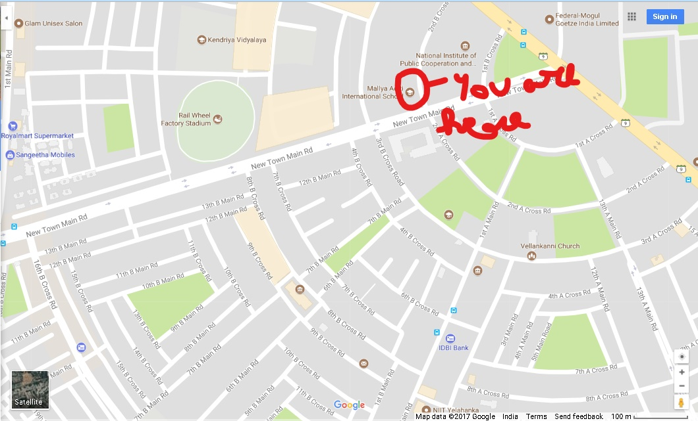

RIDDLE 1
NAME: Mr. Kiran Shetty
AGE: 45
REASON OF DEATH: Stabbed in chest 5 times
KILLER: Mystery
EVIDENCE: Man was overweight and was wearing black clothes.
INFORMATION:Victim was a security guard with personal problems.He apparently was last seen with the murderer on the CCTV but the murderer was wearing a mask and stabbed him and ran away.
RIDDLE 2: "The SCHOOL is of the NATION that can be used to go PUBLIC to the eyes of ALl".

MARK URSELF FOR I WILL BE THERE